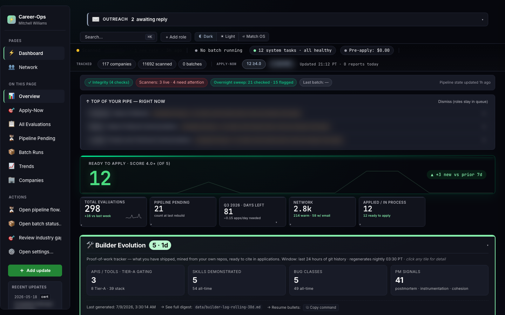
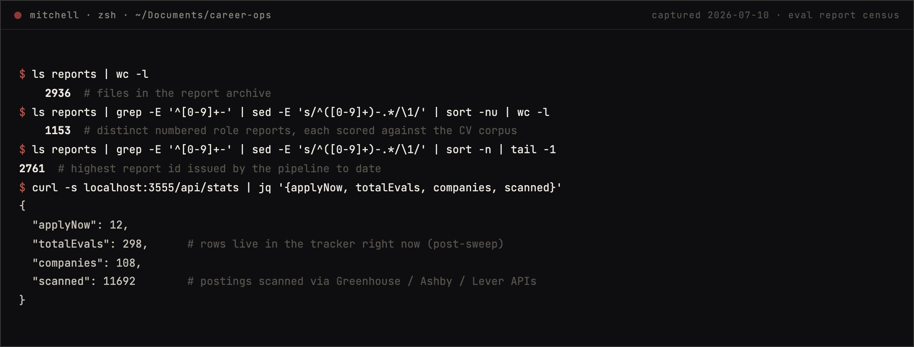
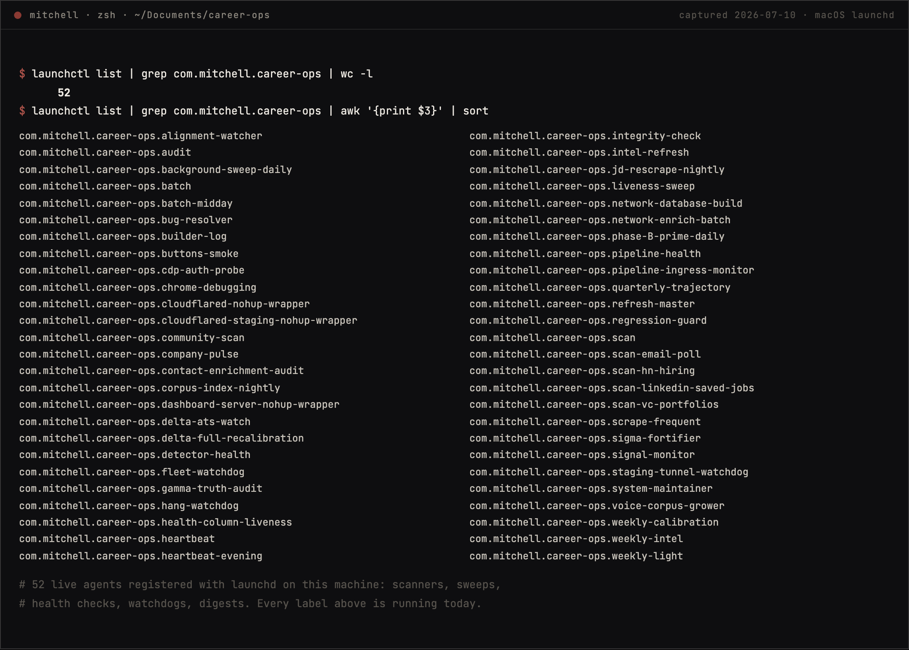

The job search, run as production software.career-ops
A job-search automation system that scans ATS portals, evaluates roles against a real CV corpus, generates tailored materials, and tracks everything: a production fork of the open-source santifer/career-ops, extended with a multi-model agent fleet of 52 scheduled jobs on macOS launchd. It has produced 1,150+ scored role reports, and the receipts are on this page. This is not a portfolio demo; it is the system I run my own search on, every day. The code is public; the life inside it stays local. The operating standard is imported from live news and Google comms: daily deadlines, nothing silently wrong.
read the narration
I'm Mitchell Williams. career-ops is my job search, run as production software. It scans ATS portals directly through the Greenhouse, Ashby, and Lever APIs at zero token cost, evaluates every role against my real CV corpus, generates tailored materials, and tracks everything. It's a production fork of the open-source santifer career-ops project, extended with a fleet of fifty-two scheduled agents running on macOS launchd, and it's produced over eleven hundred scored role reports. This isn't a portfolio demo. It's the system I run my own search on, every day. The code is public, the personal data underneath stays local and gitignored. The operating standard came straight from live news and Google comms: daily deadlines, and nothing silently wrong. Five different model vendors get orchestrated, routed by task instead of loyalty. The system's strongest credential is simple: its own owner trusts it with his own job search.
An operating discipline for a job search: every posting flows through the same scan, triage, evaluate, track pipeline, and a fleet of scheduled agents keeps the data fresh, the duplicates merged, and the owner honestly informed. The numbers below come from the live tracker and the launchd inventory, not estimates.
A fork, extended into a fleet. The foundation is santifer/career-ops, an open-source job-search pipeline. The production fork extends it with the operating layer a daily-driver system needs: 52 launchd agents covering portal scans, posting-liveness sweeps, data-integrity checks, nightly enrichment, health monitoring, and a morning email digest. The fork stays current with upstream while the personal data underneath stays gitignored and local.
Evaluation with a rubric, not a vibe. Each posting is triaged cheaply first, then batch-evaluated by stronger models against the real CV corpus, producing a scored report with an explicit recommendation. Hard-disqualifier and compensation-floor gates run as deterministic code after the model, because a scoring rule that matters should not depend on a model's mood. Low-fit roles get told "don't apply."
Operated like production. The fleet has the discipline production systems have: spend caps and kill switches on every autonomous agent, append-only audit logs, regression detection with seeded baselines, a health agent that checks quotas and credentials daily, and a bug ledger with its own resolution pipeline. When something silently breaks, a watcher notices before I do.
Public code, private life. The fork is public on GitHub: the orchestrator, the agents, the gates, the tests. What never ships is the pipeline data it operates on: applications, contacts, evaluation reports, tailored materials all stay local, gitignored at the fence and filtered out of the published history entirely. The architecture is worth showing; the life inside it is not for publishing. I walk the live system end to end on request.
Three reviewers independently flagged the numbers on this page as unverifiable, and that was fair. So here is the evidence, captured from the running system and dated. The pipeline is live, so anything that names a company I am actually talking to is blurred; everything else is exactly what the machine shows.



The tracker shows 298 evaluations because dead postings get swept and duplicates get merged; the report archive is the cumulative record. Want the live version instead of pixels? The walkthrough offer below is real.
Anyone can demo an agent. Operating a fleet of them for months, on data you personally depend on, is a different skill: it forces the unglamorous parts, the kill switches, the audit logs, the dedupe invariants, the honest scoring that tells you not to apply. career-ops is where I practice that skill daily. The system's strongest credential is that its owner trusts it with his own job search.
Operated software, not a demo. The screenshots above are receipts, but the deeper proof is that the system has to be right every morning, for me.
The production fork is public at github.com/mitwilli-create/career-ops, with the personal pipeline data filtered out of the published history entirely. The upstream it forks from is open source at github.com/santifer/career-ops; I demo the live system on request.